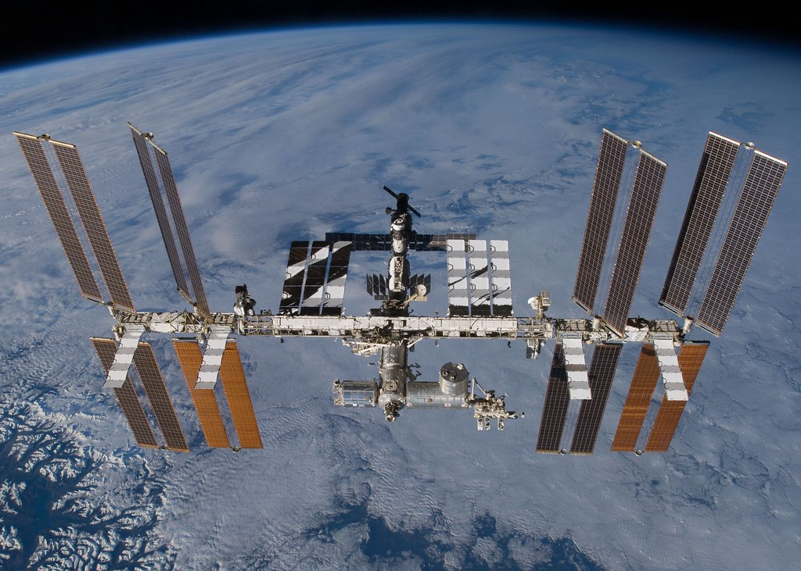

L'ISS Internationnal Space Station, en français la station spatial internationnal est une station de la taille d'un terrain de foot mais le compartiment vivable d'un boeing, orbite à 400 kilomètre d'altitude autour de la terre. la construction de l'iss a débuté en 1998 et en 2000 elle recevait déjà des astronautes et c'est en 2011 que sa construction prend fin et obtient la forme qu'elle a pour le moment.
Quel est le but de l'iss ? l'iss à pour mission de découvrir l'effet de l'apesanteur sur les humains, les animaux, les fluides,...

l'emploi du temps des astronautes, spationnautes et cosmonautes n'est pas de sortir dans l'espace en EVA (sortie extra-véhiculaire) et prendre des photos classe de la terre, mais la plupart du temps ils doivent faire de la maintenancede la station et faire des expériences scientifiques. Quelque fois, les astronautes doivent sortir en dehors de la station pour faire des réparations ou des maintenances à l'extérieur, mais cela reste extrèmement dangereux et demande une préparation de plus de 6 heures et une concentration extrème.